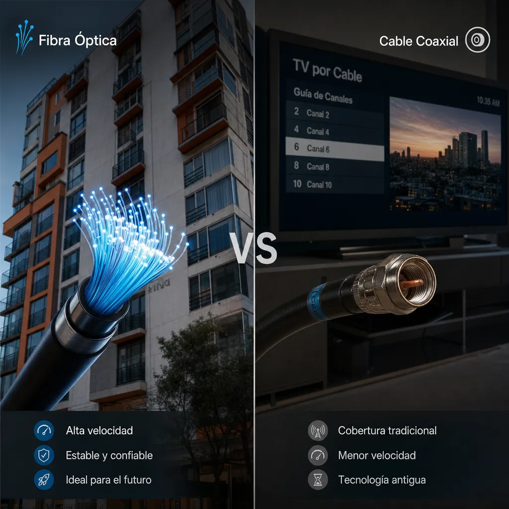

::: breadcrumbs Inicio / Blog :::
izzi vs Totalplay 2026: Comparativa Definitiva de Precios, Velocidad y Cobertura

izzi vs Totalplay 2026: Comparativa Definitiva de Precios, Velocidad y Cobertura
 {.hero-image loading=“lazy”}
{.hero-image loading=“lazy”}
izzi o Totalplay: ¿cuál elegir en 2026? La respuesta directa: si buscas fibra óptica pura con velocidades simétricas, Totalplay gana. Si prefieres un paquete económico con TV incluida y no necesitas subir archivos pesados, izzi es mejor opción. En esta comparativa profunda desglosamos precios, velocidades reales, cobertura y opiniones verificadas.
Tabla Comparativa: izzi vs Totalplay 2026
Característica izzi Totalplay
Tecnología Cable (HFC) Fibra Óptica Velocidad Máxima 500 Mbps (descarga) 1 Gbps (simétrico) Velocidad de Subida 10-20 Mbps (asimétrica) Igual a la de bajada (simétrica) Precio Desde $399 MXN/mes $449 MXN/mes Paquetes con TV Sí, desde $599 MXN Sí, desde $699 MXN Cobertura Principalmente CDMX, Edomex, Jalisco, Puebla CDMX, Edomex, Monterrey, Guadalajara y ciudades medianas Contrato 12 meses (con penalización) 12 meses (con penalización) Instalación Gratuita con promoción Gratuita con promoción Soporte Técnico App, teléfono, chat App, teléfono, chat, visita técnica
izzi: Análisis Detallado 2026
Fortalezas de izzi
- Precios competitivos: Los planes básicos de izzi suelen ser $50-$100 MXN más baratos que Totalplay
- Paquetes con TV: La oferta de canales de Televisa (Las Estrellas, Canal 5, Afizzionados) es sólida para familias mexicanas
- Velocidad de descarga decente: Para streaming 4K en 2-3 dispositivos, los 100-200 Mbps cumplen bien
- Promociones frecuentes: Regularmente ofrecen 2x1 en velocidad o meses gratis
Debilidades de izzi
- Velocidad de subida muy baja: Solo 10-20 Mbps de subida, insuficiente para videollamadas HD o subir videos a YouTube
- Congestión en horas pico: Como es cable compartido (HFC), la velocidad cae entre 8pm y 11pm
- Cobertura limitada: No llega a muchas ciudades medianas fuera del centro del país
- Soporte técnico inconsistente: Los tiempos de respuesta varían mucho según la zona
Totalplay: Análisis Detallado 2026
Fortalezas de Totalplay
- Fibra óptica pura: Velocidades simétricas que no degradan con la distancia ni el número de usuarios
- Velocidad de subida igual a bajada: Crucial para gamers, creadores de contenido y trabajo remoto
- Expansión agresiva: Totalplay está llegando a ciudades donde antes solo existía Telmex
- Planes de 1 Gbps: El único proveedor con planes residenciales de 1 Gbps a precio accesible ($999 MXN/mes)
- App funcional: La app de Totalplay permite monitorear velocidad y gestionar servicio sin llamar
Debilidades de Totalplay
- Precio ligeramente superior: Aunque competitivo, suele ser $50-$100 MXN más caro que izzi en planes equivalentes
- Soporte irregular: En algunas zonas, el soporte técnico presencial tarda 3-5 días hábiles
- Disponibilidad limitada: No todas las colonias tienen fibra óptica de Totalplay aún
izzi vs Totalplay: ¿Para Qué Uso Cada Uno?
Elige izzi si...
- Buscas el precio más bajo posible
- Consumes principalmente contenido (streaming, redes sociales) y no subes archivos
- Quieres un paquete con TV incluida a buen precio
- Vives en CDMX, Edomex, Jalisco o Puebla
- No trabajas desde casa ni haces videollamadas frecuentes
Elige Totalplay si...
- Trabajas desde casa con videollamadas frecuentes
- Eres gamer y necesitas baja latencia
- Subes videos a redes sociales o YouTube
- Tu familia tiene múltiples usuarios conectados simultáneamente
- Vives en una zona con cobertura de fibra óptica de Totalplay
Opiniones Reales de Usuarios 2026
Recopilamos opiniones de usuarios reales de foros, redes sociales y grupos de Facebook:
Opiniones de izzi
- "izzi me cobra $499 por 150 Mbps y la verdad es que en Netflix y YouTube no tengo problemas. Pero subir un video de 5 min a TikTok me tarda 20 minutos." – Usuario CDMX, marzo 2026
- "El paquete con TV de izzi es buenísimo para ver fútbol. Pero entre 8pm y 10pm se pone lento el internet." – Usuario Toluca, febrero 2026
- "Me atendieron rápido cuando se fue la luz del módem. En 2 horas ya tenía técnico en casa." – Usuario Guadalajara, enero 2026
Opiniones de Totalplay
- "Cambié de izzi a Totalplay y la diferencia es enorme. Tengo 200 Mbps simétricos y mis videollamadas de Zoom nunca se congelan. Pago $599." – Usuario Monterrey, abril 2026
- "Totalplay me instaló en 3 días. El técnico fue puntual y dejó todo funcionando. La app es muy útil para verificar velocidad." – Usuario Querétaro, marzo 2026
- "El plan de 1 Gbps de Totalplay es exagerado para mi familia, pero como creador de contenido, subir videos en 4K en minutos cambió mi vida." – Usuario CDMX, febrero 2026
Veredicto Final: ¿izzi o Totalplay?
Totalplay gana en 2026 para la mayoría de usuarios, especialmente para quienes:
- Trabajan desde casa
- Hacen gaming online
- Suben contenido a redes sociales
- Tienen familias grandes con múltiples dispositivos
La fibra óptica simétrica de Totalplay simplemente no tiene competencia en el mercado mexicano actual.
izzi sigue siendo una opción sólida si:
- Buscas maximizar ahorro
- Tu uso es básico (streaming, navegación)
- Quieres TV incluida a buen precio
- No necesitas subir archivos grandes
Preguntas Frecuentes
¿izzi usa fibra óptica?
No. izzi opera sobre red de cable coaxial (HFC), no fibra óptica pura. Esto significa velocidades asimétricas y posible congestión en horas pico.
¿Totalplay tiene cobertura en mi zona?
La mejor forma de verificar es ingresar tu código postal en totalplay.com.mx o llamar al 55 5000 1212. Totalplay ha expandido agresivamente en 2025-2026.
¿Puedo cambiar de izzi a Totalplay sin penalización?
No. Ambos contratos tienen penalización por cancelación anticipada. Generalmente debes pagar los meses restantes o una tarifa de cancelación. Espera a que termine tu contrato actual.
¿Cuál tiene mejor servicio al cliente?
Según encuestas de usuarios 2026, Totalplay tiene mejor calificación en resolución de problemas técnicos, mientras que izzi es mejor en atención telefónica general.
¿Totalplay o izzi es mejor para gaming?
Totalplay es significativamente mejor para gaming. La fibra óptica ofrece latencia más baja y estable, y la velocidad de subida simétrica mejora la experiencia en juegos online.